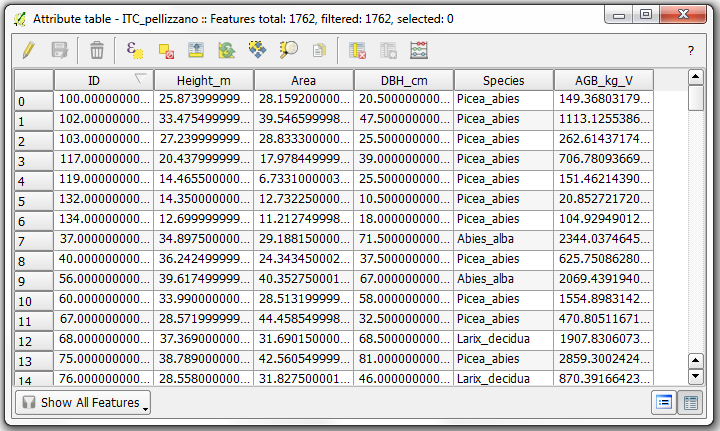
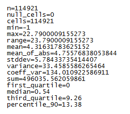

Documentazione STEM¶
Contenuti:
Introduzione¶
Il progetto STEM (Sistema informativo per il Telerilevamento E il Monitoraggio delle risorse del territorio e dell’ambiente trentino) risponde alla necessità di dotare la Provincia Autonoma di Trento (PAT) di uno strumento integrato per l’elaborazione, archiviazione e diffusione, in maniera accurata e aggiornata, di informazioni acquisite mediante sistemi di telerilevamento (dati multispettrali, iperspettrali, LIDAR, RADAR, ecc.), al fine di supportare i processi di pianificazione, gestione e controllo territoriale. il sistema prevede:
strumenti per l’aggiornamento periodico distribuzione della classificazione delle aree agro-silvo-pastorali e delle principali specie forestali, nonché per la stima dei parametri forestali, attraverso tre tipologie di elaborazione di dati telerilevati (con riferimento alle metodologie e procedure sviluppate nelle sperimentazioni FORLIDAR e AGRICOLTURA)
archiviazione e gestione dei dati telerilevati attraverso un’infrastruttura dati territoriale per il telerilevamento coordinata con l’attuale sistema SIAT
Come installare il plugin¶
Il plugin supporta la versione QGIS 3.10 LTR con GRASS GIS 7.8.
STEP: installazione dipendenze:
Provvedere a configurare GRASS (in termini di LOCATION) correttamente, lanciando direttamente l’applicazione e seguendo le istruzioni mostrate a video per la creazione della LOCATION.
Installare il motore di calcolo R, scaricandolo direttamente dal sito https://cran.r-project.org/. Il plugin supporta la versione 4.0.3.
Installare il plugin Processing R Provider e configurarlo alla voce
Impostazioni -> Opzioni -> Processing -> Programmi -> R. Per verificare la corretta installazione, si consiglia di provare uno degli script già presenti nella installazione del plugin.Verificare che in
Strumenti di Processingsia presente la voce R e le cartellePre Elaborazione, Classificazione Supervisionata, Stima dei Parametri, ...).Verificare che in Impostazioni -> Opzioni -> Processing -> Generale -> Percorso della cartella temporanea in uscita le barre del percorso siano “/” e non “”
Installazione pacchetti aggiuntivi GRASS GIS¶
Il modulo per calcolare lo Spectral Angle Mapper richiede un modulo aggiuntivo per GRASS GIS (denominati Addons). In special modo bisogna installare l’addons i.spec.sam, per fare ciò bisogna:
lanciare GRASS GIS
andare in
Impostazioni -> Estensioni (addons) aggiuntive -> Installa estensione dagli addonscliccare su
imagery -> i.spec.samall’interno dellaLista delle estensionicliccare sul bottone
Installa
A questo punto l’estensione è installata. Per controllare la corretta installazione
si può digitare i.spec.sam nel Layer Manager all’interno della
Console dei programmi; se tutto è andato a buon fine si aprirà la finestra
del comando.
Informazioni di base¶
Dati di input¶
Tutti i moduli, tranne quelli che hanno come input un file LAS, utilizzano i dati caricati nell’albero dei layer di QGIS, questo significa che è possibile utilizzare tutti i formati, supportati da GDAL.
Warning
Se il formato pur essendo nella lista sopra non viene letto da GDAL vuol dire che la vostra versione di GDAL non è stata compilata con il supporto per quel formato, per risolvere il problema dovete contattare chi gestisce la creazione dell’eseguibile per il vostro sistema operativo
Per i file LAS è possibile impostare il percorso al file direttamente all’interno del modulo selezionato.
Warning
I dati devono avere tutti lo stesso sistema di coordinate, non è possibile eseguire alcuna analisi con dati con proiezioni diverse e non viene effettuata nessuna riproiezione. Se necessario utilizzare lo strumento di riproiezione prima di eseguire le analisi.
Dati di output¶
I dati di output vengono salvati nella directory e con il nome specificato nel campo apposito.
Opzioni comuni dei moduli¶
Aggiungi risultato alla mappa: selezionare se il risultato va aggiunto alla mappa
Utilizza estensione QGIS: taglia i dati sulla estensione attuale della finestra di visualizzazione dei dati di QGIS
Pre-elaborazione immagini¶
Ritaglio¶
Il modulo Ritaglio serve per preprocessare i layer (sia vettoriali che raster) sui quali si intende lanciare i moduli STEM creando dei nuovi dataset coerenti con la forma della maschera. Una volta lanciata l’elaborazione, i nuovi layer vengono aggiunti alla TOC. La maschera (ritaglio) è di tipo shapefile M-poligonale. Il poligono può essere usato anche come maschera inversa, ovvero l’area all’interno del poligono viene rimossa. I dati presenti nella TOC (sia vettoriali che raster) vengono caricati di default tra quelli utilizzabili come input, mentre i soli vettoriali vengono aggiunti come scelta sulla quale effettuare il ritaglio. E’ possibile aggiungere ulteriori dataset tramite il pulsante “Sfoglia”.
Input¶
Dati di input: selezionare i layer da usare come maschera. Per rimoverle un dataset, selezionarlo e cancellare il layer tramite il tasto “canc”. E’ possibile i drag and drop e la scelta multipla.
Layer maschera: selezionare lo shapefile da usare come maschera.
Usa Maschera Inversa: inverte l’area da rimuovere.
Accatastamento¶
Il modulo accatastamento (o layer stacking) crea un nuovo raster multibanda a partire da più file raster mono o multibanda. L’output sarà un nuovo file multibanda in cui ogni banda (o gruppo di bande) sarà estratta da uno dei file selezionati come input. L’estensione del nuovo file raster dipendera’ dall’utilizzo o meno della funzione ‘forza ritaglio su overlap’. Se questa funzione non viene selezionata l’estensione sara’ pari alla massima estensione dei raster che si sono selezionati per l’accatastamento. Se invece si utilizza ‘forza ritaglio su overlap’ l’estensione dell’output sara’ pari all’estensione massima di sovrapposizione dei raster selezionati rispetto al primo raster.
Input¶
Dati di input: nella finestra compaiono i raster attualmente aperti in QGIS. Selezionare i raster da accatastare. E’ possibile eliminare dalla lista uno o piu’ raster selezionarli e premere ‘canc’ o variare l’ordine trascinando il raster selezionato lungo la lista. Si puo’ indicare quali bande accatastare per ciascun raster selezionato inserendo il numero delle bande separate da uno spazio. Per esempio se un raster ha 4 bande e si desidera accatastare solo la prima e seconda banda si dovra’ inserire “1 2”. Se non si seleziona quali bande accatastare per un raster verranno utilizzate tutte.
Warning
L’ordine dei raster è importante soprattutto per definire l’estensione dell’output. Il primo raster, dall’alto verso il basso, selezionato sarà quello sul quale si effettuera’ l’accatastamento e l’eventuale ritaglio se si utilizza la funzione ‘forza ritaglio su overlap’.
Parametri¶
Formato di output: selezionare il formato per l’output del comando
ENVI: formato ENVI (file binario + header).
GTIFF: formato GeoTiff.
Output¶
Risultato: inserire il percorso e il nome del file di output.
Correzione atmosferica¶
Il modulo esegue la correzione atmosferica sulla mappa raster di input utilizzando l’algoritmo 6S (Seconda Simulazione del segnale satellite nello spettro solare). Il modulo funziona solo con dati satellitari. Non utilizzare per dati da aereo. Una descrizione dettagliata dell’algoritmo è disponibile presso il sito internet “Land Surface Reflectance Science Computing Facility” (http://modis-sr.ltdri.org/).
Quando viene lanciato la regione in uso viene modificata in modo da coprire la mappa raster di ingresso prima che venga eseguita la correzione atmosferica. Le impostazioni precedenti vengono ripristinate successivamente. Si noti inoltre che il tempo di passaggio del satellite deve essere specificato in Greenwich Mean Time (GMT).
Per maggiori informazioni si veda la documentazione del comando di GRASS GIS utilizzato i.atcorr
Input¶
- Selezionare il file con i parametri 6s: selezionare il file nel quale sono memorizzati i parametri dell’algoritmo 6s.
Si ricorda che tale file deve essere formattato utilizzando le informazioni contentue nel sito “Land Surface Reflectance Science Computing Facility” (http://modis-sr.ltdri.org/). Esempio di file 6S:

Dati di input: nella finestra compaiono i raster attualmente aperti in QGIS. Selezionare il raster su cui applicare la correzione atmosferica.
Selezionare una sola banda: selezionare la banda sulla quale eseguire la correzione atmosferica. L’algoritmo processa una banda alla volta.
Parametri¶
Selezionare l’algoritmo da utilizzare: selezionare l’algoritmo con cui effetturare la correzione atmosferica. Al momento è implementato solo l’algoritmo 6s.
Convertire la mappa in input in riflettanza: selezionando questa opzione, la mappa viene convertita in immagine di riflettanza. Se non viene selezionata questa opzione, l’immagine è restituita in radianza (default).
ETM+ precedente al 1 Luglio 2000: SOLO nel caso di immagini Landsat 7. Selezionare questa opzione se le immagini sono state acquisite prima del 1 Luglio 2000.
ETM+ successivo al 1 Luglio 2000: SOLO nel caso di immagini Landsat 7. Selezionare questa opzione se le immagini sono state acquisite dopo il 1 Luglio 2000.
Output¶
Risultato: inserire il percorso e il nome del file raster di output.
Filtro riduzione del rumore¶
Il modulo riduce il rumore di un’immagine raster applicando filtri spaziali al raster selezionato. Il filtraggio è solitamente utilizzato come fase preliminare del processamento delle immagini telerilevate. In particolare, l’algoritmo sostituisce il valore di ogni pixel nell’immagine con il valore della funzione scelta applicata ad un intorno di pixel scelto dall’utente. Il file di output sarà una nuova immagine raster.
A seconda del tipo di metodo scelto l’utput potrà essere usato per diverse applicazioni: ad esempio il metodo average é solitamente utilizzato per uniformare i valori dei pixel in un’immagine ed evitare di avere in fase di classificazione pixel classificati in modo erroneo sparsi per l’immagine (errore salt and pepper).
Esempio di funzionamento del metodo average:
Valori dei pixel dell’immagine di input:
1 1 1 1 1
1 1 1 1 1
1 1 10 1 1
1 1 1 1 1
1 1 1 1 1
Scegliendo un neighborhood 3, e una finestra circolare si avrà in output:
1 1 1 1 1
1 1 2 1 1
1 2 2 2 1
1 1 2 1 1
1 1 1 1 1
Come si può vedere l’immagine é stata smussata e il valore 10 (molto superiore agli altri valori dell’immagine) é sparito.
Per maggiori informazioni si veda la documentazione del comando di GRASS GIS utilizzato r.neighbors
Input¶
Dati di input: selezionare l’immagine raster da utilizzare tra i raster attualmente aperti in QGIS.
Selezione bande: selezionare le bande che si vogliono utilizzare; se non si seleziona nulla vengono utilizzate tutte le bande.
Parametri¶
Selezione l’algoritmo: selezionare uno degli algoritmi possibili, attualmente solo neighbors.
Selezione il metodo per il neighbors: si possono scegliere diversi metodi per effettuare la riduzione del rumore
average: media dei pixel dell’intorno (neighbors);
median: mediana dei pixel dell’intorno (neighbors);
mode: moda dei pixel dell’intorno (neighbors);
minimum: minimo dei pixel dell’intorno (neighbors);
maximum: massimo dei pixel dell’intorno (neighbors);
range: intervallo dei pixel dell’intorno (neighbors);
stddev: deviazione standard dei pixel dell’intorno (neighbors);
sum: somma dei pixel dell’intorno (neighbors);
count: numero dei pixel dell’intorno (neighbors);
variance: varianza dei pixel dell’intorno (neighbors);
diversity: diversità dei pixel dell’intorno (neighbors);
interspersion: interspersion dei pixel dell’intorno (neighbors);
quart1: primo quartile dei pixel dell’intorno (neighbors);
quart3: terzo quartile dei pixel dell’intorno (neighbors);
perc90: 90esimo percentile dei pixel dell’intorno (neighbors);
quantile: n-esimo quartile dei pixel dell’intorno (neighbors).
Valore del quantile: valore tra 0 e 1 indicante il quantile da calcolare. Opzione attiva solo se si selezione quantile come metodo per il neighbor.
Dimensione del neighborhood: valore numerico dispari indicativo della dimensione della finestra mobile del filtro. Il valore deve essere dispari.
Usa neighborhood circolare: se selezionato viene usata una finestra mobile circolare anzichè quadrata.
Output¶
Risultato: inserire il percorso e il nome del file di output.
Segmentazione¶
Il modulo effettua la segmentazione di immagini. La segmentazione di immagini è il processo di raggruppamento dei pixel simili in segmenti distinti. In letteratura esistono molti algoritmi di segmentazione; in questo tool è implementato un algoritmo di region growing: l’algoritmo parte da punti “seme” da cui il segmento si espande ai pixel contigui che soddisfano alcuni criteri definiti dall’utente. Più nel dettaglio, l’algoritmo di region growing esamina iterativamente tutti i segmenti nella mappa raster, calcolando la somiglianza fra il segmento analizzato (secondo una formula di distanza) e ciascuno dei segmenti ad esso vicini. Due segmenti saranno uniti se, e solo se, soddisfano una serie di criteri, tra cui:
i due segmenti sono reciprocamente simili tra loro (la distanza di somiglianza è inferiore rispetto alla soglia di ingresso), e
la somiglianza fra di essi è maggiore rispetto agli altri segmenti adiacenti. Il processo viene ripetuto fino a quando non è possibile eseguire ulteriori fusioni delle regioni.
Ad ogni oggetto trovato durante il processo di segmentazione viene assegnato un ID univoco. Nota che la segmentazione differesce dalla classificazione dove tutti i pixel simili tra loro sono assegnati alla stessa classe e non devono essere contigui (nella segmentazione devono essere contigui!). Il risultati di una segmentazione di un’immagine può essere utile per conto proprio o essere utilizzato come un passo di preprocessing per la classificazione delle immagini. La segmentazione è una fase di pre-elaborazione in grado di ridurre il rumore e velocizzare la classificazione.
Per maggiori informazioni si veda la documentazione del comando di GRASS GIS utilizzato i.segment
Input¶
Dati di input: nella finestra compaiono i raster attualmente aperti in QGIS. Selezionare il raster su cui eseguire la segmentazione.
Parametri¶
Seleziona il threshold da utilizzare: seleziona il threshold di “somiglianza” con il quale suddividere in segmenti l’immagine. La somiglianza tra i segmenti e gli oggetti non uniti è utilizzata per determinare quali pixel possono essere fusi fra loro in unico oggetto. Valori di distanza piccoli indicano una corrispondenza più stretta, con un punteggio di somiglianza pari a zero per i pixel identici. Durante la normale elaborazione, le fusioni sono consentite soltanto quando la somiglianza tra due segmenti è inferiore al valore di soglia. La soglia deve essere maggiore di 0 e minore di 1. Una soglia 0 consentirebbe di unire solo pixels con valori identici, mentre una soglia 1 consentirebbe di unire tutti i pixel in un’unica regione. Test empirici iniziali indicano che valori di soglia nell’intervallo 0.2-0.01 sono valori ragionevoli: ad ogni modo tale valore dipende dalla tipologia di immagine e di oggetti presi in considerazione. Si raccomanda di iniziare con un valore basso, ad esempio 0.01, e quindi eseguire la segmentazione gerarchica utilizzando l’uscita dell’ultima esecuzione come “seme” per la corsa successiva.
Seleziona il metodo di calcolo della similarità: seleziona il metodo per calcolare la similarità fra pixel adiacienti.
euclidean: calcola la distanza euclidea fra i valori dei due pixel adiacenti.
manhattan: calcola la distanza Manhattan fra i valori dei due pixel adiacenti.
Numero massimo di iterazioni: rappresenta il numero massimo di iterazioni eseguite dall’algoritmo durante il processo di aggregazione dei segmenti. Più il numero è elevato, più il processo è completo, richiedendo tuttavia un maggior tempo di elaborazione. Il numero impostato di default rappresenta un valore inferiore al di sotto del quale è consigliabile non andare.
Selezionare il numero minimo di pixel in un segmento: rappresenta il numero minimo di pixel di cui deve essere composto ogni singolo segmento. Durante l’iterazione finale del processo, qualora un segmento abbia dimensione minima inferiore, verrà aggregato on il segmento adiacente più simile anche se la somiglianza è superiore alla soglia (vedi spiegazione threshold di similarità).
Inserire il valore di memoria da utilizzare in MB: esprime il valore in MB di RAM da utilizzare per il processo in corso.
Output¶
Risultato: inserire il percorso e il nome del file di output.
Goodness of fit: La bontà di adattamento per ciascun pixel viene calcolato come 1 - distanza del pixel dal segmento a cui appartiene. La distanza è calcolata con il metodo di somiglianza selezionato. Il valore 1 significa valori identici, mentre il valore 0 significa massima distanza possibile.
Dark object subtraction¶
Il modulo esegue la correzione atmosferica sulla mappa raster di input utilizzando l’algoritmo “Dark Object Subtraction””. Il modulo funziona solo con dati satellitari Landsat. Non utilizzare per dati da aereo.
Questo modulo viene utilizzato per trasformare i digital number calibrati di immagini Landsat in radianza “top-of-atmosphere” o riflettanza “top-of-atmosphere” e in temperatura (banda 6 dei sensori TM e ETM +). Facoltativamente, può essere usato per calcolare la radianza in superficie o riflettanza con correzione atmosferica (metodo DOS). Di solito, per farlo sono necessari la data di produzione, la data di acquisizione, e l’elevazione solare. Inoltre, per Landsat-7 ETM + è necessario anche il “gain” (alto o basso) delle bande Landsat. Questi dati vengono letti dal file di metadati (.met o MTL.txt) per tutti i Landsat MSS, TM, ETM + e OLI / TIRS.
Attenzione: Qualsiasi valore del raster nullo o inferiore rispetto QCALmin viene impostato a null nel raster di uscita e non è incluso nelle equazioni.
Valori “uncorrected at-sensor” (Metodo di correzione atmosferica = uncorrected, default)
Le correzioni geometriche e radiometriche standard generano delle immagini con digital number calibrati (QCAL = DN). Per poter standardizzare ulteriormente l’impatto dell’illuminazione sulla geometria, le immagini QCAL sono convertite prima di tutto in radianza “at-sensor” e poi in riflettanza “at-sensor”. La banda termica è prima convertita da QCAL in radianza “at-sensor”, e poi in temperatura effettiva “at-sensor” in gradi Kelvin. La correzione radiometrica converte i valori QCAL in radianza “at-sensor” (misurata in W/(m² * sr * µm)) usando le equazioni:
gain = (Lmax - Lmin) / (QCALmax - QCALmin)
bias = Lmin - gain * QCALmin
radianza = gain * QCAL + bias
dove, Lmax e Lmin sono costanti di calibrazione, e QCALmax e QCALmin sono i valori massimo e minimo del range della radianza riscalata in QCAL. Successivamente per calcolare la riflettanza “at-sensor” le equazioni sono:
sun_radiance = [Esun * sin(e)] / (PI * d^2)
reflectance = radiance / sun_radiance
dove, d è la distanza Terra-Sole in unità astronomiche, e è l’angolo di elevazione del sole, e Esun è il valore medio di irradianza esoatmosferica in W/(m² * µm).
Valori semplificati “at-surface” (Metodo di correzione atmosferica = dos[1-4])
La correzione atmosferica e la calibrazione della riflettanza rimuovono la “path radiance”, ovvero la luce sporadica dall’atmosfera, e l’effetto spettrale dell’illuminazione solare. Le equazioni per ottenere la radianza “at-surface” e la riflettanza “at-surface” (non valide per le bande termiche) sono le seguenti:
sun_radiance = TAUv * [Esun * sin(e) * TAUz + Esky] / (PI * d^2)
radiance_path = radiance_dark - percent * sun_radiance
radiance = (at-sensor_radiance - radiance_path)
reflectance = radiance / sun_radiance
dove percent è un valore tra 0.0 e 1.0 (di solito 0.01), Esky è l’irradianza diffusa, TAUz è la trasmittanza dell’atmosfera lungo il percorso tra il sole e la superficie del suolo, e TAUv è la trasmittanza dell’atmosfera lungo il percorso tra la superficie del suolo e il sensore. radiance_dark è la radianza “at-sensor” calcolata dall’oggetto più scuro, ad esempio il valore di digital number con almeno ‘dark_parameter’ (solitamente 1000) pixels per l’intera immagine. I valori sono,
DOS1: TAUv = 1.0, TAUz = 1.0 and Esky = 0.0
DOS2: TAUv = 1.0, Esky = 0.0, and TAUz = sin(e) per tutte le bande con lunghezza d’onda massima minore di 1 (i.e. bands 4-6 MSS, 1-4 TM, and 1-4 ETM+). Per le altre bande TAUz = 1.0
DOS3: TAUv = exp[-t/cos(sat_zenith)], TAUz = exp[-t/sin(e)], Esky = rayleigh
DOS4: TAUv = exp[-t/cos(sat_zenith)], TAUz = exp[-t/sin(e)], Esky = PI * radiance_dark
Attenzione: la radinaza in uscita non viene modificata (es.: i valori negativi non vengono settati a 0) quindi è possibile vi siano valori negativi. In ogni caso i valori di riflettanza vengono settati a 0 quando negativi.
Per maggiori informazioni si veda la documentazione del comando di GRASS GIS utilizzato i.landsat.toar
Input¶
Selezionare la cartella contenente i file Landsat: selezionare la acrtella contenet i file Landsat. I file devono avere i nomi nel segunte formato: “basename.1” per la banda 1, “basename.2” per la banda 2, ecc. “basename” viene inserito tra i parametri.
Selezionare il file dei metadata dei dati Landsat da analizzare: Selezionare il file dei metadati dei dati Landsat da analizzare che dovrà essere o “.met” o chiamarsi “MTL.txt”.
Parametri¶
Selezionare il prefisso dei dati Landsat: inserire il prefisso per i nomi dei file di input (“basename”).
Metodo di correzione atmosferica:
uncorrected
dos1
dos2
dos2b
dos3
dos4
Percentuale della radianza solare: percentuale della radianza solare nella path radiance. E’ richiesto solo se il methodo è un “dos”. Valore di default: 0.01.
Numero minimo di pixel da considerare numero digitale dark object: numero minimo di pixel da considerare digital number come dark object. E’ richiesto solo se il methodo è un “dos”. Valore di default: 1000.
Valore dello scattering di Rayleigh, si utilizza solo con il metodo “dos3”: valore di irradianza diffusa di Rayleigh. Richiesto solo per il metodo “dos3”. Valore di default: 0.
Output¶
Selezionare il prefisso per salvare i risultati: prefisso dei nomi dei file di output.
Pansharpening¶
Il modulo utilizza la banda pancromatica di un’immagine multispettrale per incrementare la risoluzione di altre tre bande a più bassa risoluzione geometrica. Le tre bande possono poi essere combinate in un’immagine RGB a più alta risoluzione geometrica. Per esempio, un’immagine Landsat ETM ha alcune bande a 30 m di risoluzione spaziale [banda 1 (blu), 2 (verde), 3 (rosso), 4 (NIR), 5 (mid-IR), and 7 (mid-IR)], e una banda pancromatica a più alta risoluzione(banda 8 a 15m di risoluzione geometrica). Il modulo pansharpening permette alle bande 3-2-1 (o ad altre combinazioni di bande a 30 m di risoluzione, come ad esempio 4-3-2 or 5-4-2) di essere combinate in un’immagine a 15 metri di risoluzione.
Per maggiori informazioni si veda la documentazione del comando di GRASS GIS utilizzato i.pansharpen
Input¶
Dati di input: selezionare il raster a risoluzione più bassa contenente le tre bande per cui la risoluzione va incrementata. Il raster deve essere precedentemente aperto in QGIS.
Selezionare la banda per il canale rosso: selezionare tra le bande dell’immagine caricata sopra la banda corrispondente al canale del rosso;
Selezionare la banda per il canale verde: selezionare tra le bande dell’immagine caricata sopra la banda corrispondente al canale del verde;
Selezionare la banda per il canale blu: selezionare tra le bande dell’immagine caricata sopra la banda corrispondente al canale del blu;
Dati di input: selezionare il raster contente la banda a risoluzione migliore da utilizzare per il pansharpening. Il raster deve essere precedentemente aperto in QGIS.
Selezionare la banda a risoluzione migliore: selezionare tra le bande dell’immagine caricata sopra la banda a maggiore risoluzione.
Selezione bande: selezionare le bande che si vogliono utilizzare; se non si seleziona nulla vengono utilizzate tutte le bande.
Parametri¶
Seleziona il tipo di Pansharpening: si possono scegliere diversi metodi per effettuare il pansharpening:
brovey: nel pansharpening Brovey, ognuna delle 3 bande a bassa risoluzione e la banda pancromatica sono combinati utilizzando il seguente algoritmo per calcolare 3 nuove bande alla risoluzione più elevata (ad esempio, per la banda 1):
nuova_banda1 = [banda1/(banda1+banda2+banda3)]*pancromatica
ihs: nel pansharpening IHS le 3 bande a bassa risoluzione originali, selezionate come canali rosso, verde e blu per creare un’immagine composita RGB, vengono trasformate in IHS (intensità, tonalità e saturazione). La banda pancromatica viene quindi sostituita al canale intensità (I), in combinazione con la tonalità (H) e saturazione (S) originali. L’immagine IHS viene poi ritrasformata verso lo spazio colore RGB alla risoluzione spaziale della banda pancromatica. L’algoritmo può essere rappresentato come: RGB - > IHS - > [pan]HS - > RGB.
pca: nel pansharpening PCA un’analisi delle componenti principali viene eseguita sulle 3 bande a bassa risoluzione originali per creare 3 immagini delle componenti principali (PC1, PC2 e PC3) e i loro autovettori associati (EV), in modo tale che:
banda1
banda2
banda3
PC1
EV1-1
EV1-2
EV1-3
PC2
EV2-1
EV2-2
EV2-3
PC3
EV3-1
EV3-2
EV3-3
e
PC1 = EV1-1 * banda1 + EV1-2 * banda2 + EV1-3 * banda3 - media(bande 1,2,3)
Una PCA inversa e’ poi applicata sostituendo la banda pancromatica al posto della prima componente principale (PC1). Per fare questo la matrice degli autovettori é invertita (in questo caso trasposta), le immagini delle componenti principali (PC) sono moltiplicate per gli autovettori con la banda pancromatica sostituita a PC1, ed il valore medio di ogni banda é aggiuntoad ogni immagine trasformata secondo il seguente algoritmo (as esempio per la banda 1):
nuova_banda1 = pancromatica * EV1-1 + PC2 * EV2-1 + PC3 * EV3-1 + media(banda1)
Output¶
Prefisso del risultato: inserire il percorso e il prefisso dei nomi dei file di output.
Pre-elaborazione LIDAR¶
Filtraggio file LAS¶
Il modulo esegue il filtraggio dei file .las (o .laz) in modo da selezionare solo i punti LIDAR che rispettano determinate regole.
Input¶
File LAS di input: selezionare il file .las (o .laz) da filtrare.
Parametri¶
Tutti i parametri sono opzionali. Se non viene impostato nessun parametro il modulo darà in output lo stesso file .las (o .laz) di input.
Selezionare il ritorno da mantenere: se non si seleziona nulla vengono matenuti tutti i ritorni.
primo: primi ritorni;
ultimo: ultimi ritorni;
altri: ritorni intermedi;
Inserire il valore minimo per la X: valore minimo della X da mantenere. Se non si inserisce non ci sarà una soglia minima per la X.
Inserire il valore massimo per la X: valore massimo della X da mantenere. Se non si inserisce non ci sarà una soglia massima per la X.
Inserire il valore minimo per la Y: valore minimo della Y da mantenere. Se non si inserisce non ci sarà una soglia minima per la Y.
Inserire il valore massimo per la Y: valore massimo della Y da mantenere. Se non si inserisce non ci sarà una soglia massima per la Y.
Inserire il valore minimo per la Z: valore minimo della Z da mantenere. Se non si inserisce non ci sarà una soglia minima per la Z.
Inserire il valore massimo per la Z: valore massimo della Z da mantenere. Se non si inserisce non ci sarà una soglia massima per la Z.
Inserire il valore minimo per l’intensita’: valore minimo dell’intensita’ da mantenere. Se non si inserisce non ci sarà una soglia minima per l’intensita’.
Inserire il valore massimo per l’intensita’: valore massimo dell’intensita’ da mantenere. Se non si inserisce non ci sarà una soglia massima per l’intensita’.
Inserire il valore minimo per l’angolo di scansione: valore minimo dell’angolo di scansione da mantenere. Se non si inserisce non ci sarà una soglia minima per l’angolo di scansione.
Inserire il valore massimo per l’angolo di scansione: valore massimo dell’angolo di scansione da mantenere. Se non si inserisce non ci sarà una soglia massima per l’angolo di scansione.
Inserire i valori minimo e massimo per l’angolo di scansione: valori minimo e massimo per l’angolo di scansione da mantenere. I valori vanno seprati da uno spazio.
Inserire il valore della classe da tenere: valore della classe da mantenere (deve essere un numero intero).
Output¶
Risultato: inserire il percorso e il nome del file di output.
Comprimere il file di output: se selzionato l’output sara’ in formato .laz.
Unione file LAS¶
Il modulo unisce due file .las (o .laz) e li salva in un unico file .las (o .laz).
Input¶
File las di input: selezionare il primo file .las (o .laz) da unire.
File las di input: selezionare il secondo file .las (o .laz) da unire.
Output¶
Risultato: inserire il percorso e il nome del file di output.
Ritaglio file LAS¶
Il modulo permette di ritagliare un file .las (o .laz) rispetto ad una maschera (può contenere più poligoni). L’output é un file .las (o .laz) contente i punti ritagliati.
Input¶
Mascherat: selezionare il vettoriale (es: .shp) con cui ritagliare.
File las di input: selezionare il file las (o .laz) da ritagliare.
Output¶
Risultato: inserire il percorso e il nome del file di output (las o laz).
Estrazione CHM¶
Il modulo “normalizza” rispetto alla quota del suolo la Z delle coordinate dei punti LiDAR all’interno di un file .las. Se il file .las ricopre un’area forestale si avrà in uscita il Canopy Height Model. L’algoritmo sottrae alla Z di ogni punto del file .las di input la quota del DTM in quel punto. Il CHM in uscita è un file .las in cui sono memorizzati i punti la cui quota è data dalla differenza fra i punti del file .las di input e la quota del Digital Terrain Model - DTM (fornito in formato raster).
Input¶
File LAS di input: scegliere il file .las a cui sottrarre la quota del suolo.
File DTM di input: scegliere il file raster del Digital Terrain Model (DTM).
Output¶
Risultato: inserire il percorso e il nome del file .las (o .laz) di output.
Rasterizzazione file LAS¶
Il modulo serve per creare immagini raster partendo da file in formato .las (o .laz). I principali passaggi effettuati dall’algoritmo sono: 1) creazione di una griglia uniforme di risoluzione spaziale pari alla risoluzione scelta dall’utente; 2) per ogni cella vengono estratte le altezze (Z) dei punti LIDAR contenuti in essa; 3) ai valori di altezza (Z) estratti precedentemente viene applicato il metodo statistico scelto dall’utente (es. media); 4) partendo dai valori ottenuti al punto 3 viene creata un’immagine raster. L’utente può scegliere tra una varietà di metodi statistici nella creazione dell’immagine raster. L’output sarà un’immagine raster.
Per maggiori informazioni si veda la documentazione della funzione grid_terrain del pacchetto lidR di R https://www.rdocumentation.org/packages/lidR/versions/3.0.3/topics/grid_terrain
Input¶
File LAS di input: selezionare il file .las (o .laz) da rasterizzare.
Parametri¶
Selezionare il ritorno desiderato: con questo parametro si sceglie quali ritorni utilizzare nella fase di rasterizzazione.
all: tutti i ritorni;
first: solo il primo ritorno;
last: solo l’ultimo ritorno;
mid: solo i ritorni intermedi.
Selezionare il metodo statistico da utilizzare: con questo parametro si sceglie il metodo statistico da utilizzare nella fase di rasterizzazione
n: numero di punti nel pixel;
min: valore minimo dei punti nel pixel;
max: valore massimo dei punti nel pixel;
range: intervallo dei valori dei punti nel pixel;
sum: somma dei valori dei punti nel pixel;
mean: media dei punti nel pixel;
stddev: deviazione standard dei punti nel pixel;
variance: varianza dei punti nel pixel
coeff_var: coefficiente di variazione dei punti nel pixel in percentuale [(deviazione_standard/media)*100];
median: mediana dei punti nel pixel
percentile: n-esimo percentile dei punti nel pixel
skewness: skewness dei punti nel pixel
trimmean: media dei punti nel pixel al di sopra e al di sotto di una soglia.
Percentile valori supportati 1 100 (opzionale): valore del percentile (attivo solo se si estrae il percentile).
Soglia trim: valore della soglia da usare in trimmean (attivo solo se si estrae il trimmean).
Risoluzione finale del raster: risoluzione geometrica del file di output in metri.
Classe (opzionale): i numeri della classe o classi da considerare, se si seleziona più classi vanno separate da uno spazio.
Output¶
Risultato: inserire il percorso e il nome del file di output.
Estrazione feature LIDAR da poligoni¶
Il modulo permette di estrarre feature LIDAR a partire da un file .las (o .laz) e uno shapefile poligonale. L’output è uno shapefile contente come attributi i parametri estratti dal file.
Input¶
Dati di input: selezionare lo shapefile da usare per ritagliare il file .las. Lo shapefile deve essere stato precedentemente aperto in Qgis.
File LAS di input: selezionare il file .las da ritagliare.
Parametri¶
- Seleziona le statistiche da calcolare: selezionare dal menù a tendina le statistiche da calcolare.
[max] Valore massimo altezza punti: valore massimo di altezza dei punti.
[mean] Altezza media punti: valore medio di altezza dei punti.
[mode] Valore moda punti: valore moda di altezza dei punti.
[hcv] Coefficiente di variazione: rapporto tra la deviazione standard delle altezze dei punti e la media delle altezze.
[p10 - p90] N-esimo percentile altezze punti: percentile sulle altezze dal 10mo al 90mo.
Seleziona le dimensione: selezionare dal menù a tendina la dimensione a cui applicare le statistiche da calcolare.
Output¶
Risultato: inserire il percorso e il nome del file di output.
Estrazione feature¶
Feature di tessitura¶
Il modulo crea mappe raster contenti le feature di tessitura estratte a partire da un layer raster specificato dall’utente. Il modulo calcola caratteristiche tessiturali basate su matrici di dipendenza spaziale a 0, 45, 90, e 135 gradi di distanza (default = 1). Il modulo assume livelli di grigio che vanno da 0 a 255 come input. L’ingresso è riscalato automaticamente a 0 a 255 se la gamma del file di input è al di fuori di questo intervallo. In generale, più variabili costituiscono feature di tessitura: differenze nei valori di livello di grigio, grossolanità come scala di differenze dei livelli di grigio, la presenza o la mancanza di direzionalità e di schemi regolari. Una feature di tessitura può essere caratterizzata da toni (proprietà di intensità dei liveli di grigio) e da struttura (relazioni spaziali). Dal momento che le feature di tessitura sono altamente dipendenti dalla scala, si possono verificare strutture gerarchiche tra le feature.
Il modulo prende in input un layer raster e calcola le caratteristiche tessiturali basandosi su matrici di dipendenza spaziale in direzione nord-sud, est-ovest, nord-ovest, sud-ovest e nelle direzioni con un fianco a fianco, in zona (ad esempio, una distanza di 1). L’uscita consiste in quattro immagini per ogni funzione strutturale, una per ogni direzione.
Un modello di struttura comunemente usato è basato sulla cosiddetta matrice di co-occorrenza dei livelli di grigio. Questa matrice è un istogramma bidimensionale di livelli di grigio per ogni coppia di pixel che sono separati da una relazione spaziale fissa. La matrice approssima la distribuzione di probabilità congiunta di una coppia di pixel. Diverse misure di tessitura sono direttamente calcolate sulla matrice di co-occorrenza dei livelli di grigio.
Per maggiori informazioni si veda la documentazione del comando di GRASS GIS utilizzato r.texture
Input¶
Dati di input: selezionare il raster da utilizzare tra quelli attualmente aperti in QGIS.
Selezionare le bande da utilizzare: selezionare le bande che si vogliono utilizzare; se non si seleziona nulla vengono utilizzate tutte le bande.
Parametri¶
Metodi per calcolare la tessitura: si possono scegliere diversi metodi di calcolo delle feature di tessitura
Somma media (SA): questa misura fornisce la media dei livelli di grigio all’interno della finestra mobile.
Entropia (ENT): questa misura analizza la casualità. ENT è alto quando i valori della finestra mobile hanno valori simili. ENT è bassa quando i valori sono vicini a 0 o 1 (cioè quando i pixel nella finestra locale sono uniformi).
Differenza di entropie (DE).
Somma di entropie (SE).
Varianza (VAR): fornisce una misura della varianza dei toni di grigio all’interno della finestra mobile.
Differenza di varianze (DV).
Somma di varianze (SV).
Secondo momento angolare (ASM, chiamato anche uniformità): questa è una misura di uniformità locale ed è l’opposto dell’entropia. Alti valori di ASM si verificano quando i pixel nella finestra mobile sono molto simili. Nota: la radice quadrata del’ASM è talvolta usata come misura di consistenza, e si chiama energia.
Inverse Moment Difference (IDM, chiamato anche omogeneità): tale misura è legata inversamente alla misura di contrasto. Si tratta di una misura diretta dell’omogeneità locale di un’immagine digitale. Valori bassi sono associati a bassa omogeneità e viceversa.
Contrasto (CON): questa misura analizza il contrasto dell’immagine (localmente variazioni a livello di grigio), come la dipendenza lineare dei livelli di grigio dei pixel vicini (somiglianza). Tipicamente alto quando la scala della trama locale è maggiore della distanza.
Correlazione (COR): questa misura analizza la dipendenza lineare dei livelli di grigio di pixel adiacenti. Tipicamente alto quando la scala della trama locale è maggiore della distanza.
Misure di informazione di correlazione (MOC).
Coefficiente di correlazione massimo (MC).
Dimensione della finestra mobile: dimensione della finestra mobile su cui sono calcolate le feature di tessitura.
Output¶
Risultato: inserire il percorso e il nome del file di output.
Feature geometriche¶
Il modulo effettua l’estrazione di feature geometriche da un’immagine raster. Il processo di estrazione delle feature geometriche avviene su ciascuna banda dell’immagine analizzata, all’interno di un intervallo (definito dall’utente) di segmentazione delle immagini. Per ogni banda e per ogni livello di smoothing, è eseguita una segmentazione (vedi modulo segmentazione) che tiene conto sia delle informazioni spettrali sia della geometria dei singoli segmenti presi in considerazione durante il processo di region growing. Il risultato finale di questo processo è una serie (scala) di immagini accatastate per ogni banda in un unico file di output. Nota che questo modulo è stato ottimizzato per utilizzare immagini multispettrali (4 bande).
Per maggiori informazioni si veda la documentazione del comando di GRASS GIS utilizzato i.segment
Input¶
Dati di input: nella finestra compaiono i raster attualmente aperti in QGIS. Selezionare il raster su cui eseguire l’estrazione delle feature geometriche.
Selezionare le bande da utilizzae cliccandoci sopra: selezionare le bande dell’immagine su cui effettuare la segmentazione.
Parametri¶
Seleziona il threshold minimo: questo valore definisce il threshold minimo da cui iniziare il processo di estrazione delle feature geometriche. Tale valore esprime il threshold minimo della segmentazione dell’immagine.
Seleziona il threshold massimo: questo valore definisce il threshold massimo da cui iniziare il processo di estrazione delle feature geometriche. Tale valore esprime il threshold massimo della segmentazione dell’immagine.
Seleziona il valore incrementale del threshold: questo valore definisce di quanto incrementare il valore di segmentazione all’interno di ciascuna scala. Da questo valore dipente il numero di feature che verrà estratto per ogni banda dell’immagine.
Inserire il valore di memoria da utilizzare in MB: esprime il valore in MB di RAM da utilizzare per il processo in corso.
Output¶
Risultato: inserire il percorso e il nome del file di output.
Indici di vegetazione¶
Questo modulo estrae da un’immagine multibanda raster i più utilizzati indici di vegetazione presenti in letteratura. Tali indici possono essere utilizzati poi come input nella fase di classificazione o di stima. La maggioranza degli indici é stat sviluppata per immagini satellitari, quindi se ne consiglia l’uso con immagini acquisite da satellite. Si può usare comunque anche con dati da aereo.
Per maggiori informazioni si veda la documentazione del comando di GRASS GIS utilizzato i.vi
Input¶
Dati di input: nella finestra compaiono i raster attualmente aperti in QGIS. Selezionare il raster multibanda da utilizzare.
Selezionare la banda per il canale rosso: tra le bande disponibili selezionare quella corrispondente al canale spettrale del rosso.
Selezionare la banda per il canale verde: tra le bande disponibili selezionare quella corrispondente al canale spettrale del verde.
Selezionare la banda per il canale blu: tra le bande disponibili selezionare quella corrispondente al canale spettrale del blu.
Selezionare la banda per il canale infrarosso: tra le bande disponibili selezionare quella corrispondente al canale spettrale dell’infrarosso.
Parametri¶
Seleziona l’indice di vegetazione: selezionare l’indice di vegetazione da calcolare.
arvi: Atmospheric Resistant Vegetation Index. L’indice ARVI è un indice resistente agli effetti atmosferici (in confronto all’NDVI) ed è realizzato mediante un processo di autocorrezione per l’effetto atmosferico nel canale del rosso, utilizzando la differenza di luminosità tra il canale del blu e il canale rosso. Si calcola nel modo seguente:
ARVI = [infrarosso - (2.0 * rosso - blu)] / [infrarosso + (2.0 * rosso - blu)]
dvi: Difference Vegetation Index. Si calcola nel modo seguente:
DVI = (infrarosso - rosso)
evi: Enhanced Vegetation Index. L’indice EVI è un indice ottimizzato progettato per evidenziare la vegetazione con una migliore sensibilità in regioni ad alta biomassa e migliorando il controllo della vegetazione attraverso un disaccoppiamento del segnale di background della canopy e una riduzione dell’influenza dell’atmosfera. Si calcola nel modo seguente:
EVI = 2.5 * (infrarosso - rosso) / (infrarosso + 6.0 * rosso - 7.5 * blu + 1.0)
evi2: Enhanced Vegetation Index 2. Indice EVI a 2 bande senza la banda blu. Fornisce valori molto simili all’EVI a 3 bande quando gli effetti atmosferici sono insignificanti e la qualità dei dati è buona. Si calcola nel modo seguente:
EVI2 = 2.5 * (infrarosso - rosso) / (infrarosso + 2.4 * rosso + 1.0)
gari: Green Atmospherically Resistant Vegetation Index. Si calcola nel modo seguente:
GARI = (infrarosso - (verde - (blu - rosso))) / (infrarosso + (verde - (blu - rosso)))
gemi: Global Environmental Monitoring Index. Si calcola nel modo seguente:
GEMI = (((2 * ((infrarosso * infrarosso) - (rosso * rosso)) + 1.5 * infrarosso + 0.5 * rosso) / (infrarosso + rosso + 0.5)) * (1 - 0.25 * (2 * ((infrarosso * infrarosso) - (rosso * rosso)) + 1.5 * infrarosso + 0.5 * rosso) / (infrarosso + rosso + 0.5))) - ((rosso - 0.125) / (1 - rosso))
ipvi: Infrared Percentage Vegetation Index. Si calcola nel modo seguente:
IPVI = infrarosso / (rosso + infrarosso)
ndvi: Normalized Difference Vegetation Index. Si calcola nel modo seguente:
NDVI = (infrarosso - rosso) / (infrarosso + rosso)
savi: Soil Adjusted Vegetation Index. Si calcola nel modo seguente:
SAVI = ((1.0 + 0.5) * (infrarosso - rosso)) / (infrarosso + rosso +0.5)
sr: Simple Ratio. Si calcola nel modo seguente:
SR = (infrarosso / rosso)
vari: Visible Atmospherically Resistant Index. L’indice VARI è stato studiato per introdurre un’autocorrezione degli effetti atmosferici. Si calcola nel modo seguente:
VARI = (verde - rosso) / (verde + rosso - blu)
Output¶
Risultato: inserire il percorso e il nome del file di output.
Selezione feature/variabili¶
Selezione feature per classificazione¶
Il modulo esegue la selezione delle feature per la classificazione. La selezione verrà effettuata utilizzando l’algoritmo Sequential Forward Floating Selection (SFFS) e la distanza di Jeffries-Matusita. In output vi saranno 2 file di testo: il primo con un riassunto generale della selezione, il secondo con l’indicazione delle feature da selezionare (per i moduli di classificazione supervisionata). La distanza di Jeffries-Matusita satura ad un valore pari a radice di 2, quindi il numero ottimale di feature si avrà quando la distanza è uguale a radice di 2. La selezione si ferma automaticamente quando questo accade. Per maggiori informazioni vedi la funzione ‘varSelSFFS’ in https://cran.r-project.org/web/packages/varSel/varSel.pdf
Warning
Ogni classe deve avere un numero di pixel superiore al numero totale di bande. Se questo vincolo non è soddisfatto la selezione si blocca in anticipo rispetto al valore ottimale a causa della non invertibilità della matrice di covarianza della classe il cui numero di campioni è limitato. Il modulo da comunque in output la selezione con un numero di bande non ottimale.
Warning
Se una banda del file di input contiene valori dei pixel tutti uguali è probabile che la selezione si blocchi alla prima iterazione. Si consiglia di verificare quindi i valori delle bande, e semmai rimuovere le bande corrotte, per evitare questo problema.
Warning
Questo modulo non prende in considerazione l’estensione di QGIS e/o una maschera
Input¶
Dati di input vettoriale: selezionare il file di input vettoriale contente le aree di training.
Seleziona la colonna con l’indicazione della classe: selezionare la colonna con l’indicazione dei codici delle classi. Vedi sopra i codici delle classi utilizzabili.
Dati di input raster: selezionare il file raster da cui estrarre i valori dei pixel.
Parametri¶
Selezionare la strategia da utilizzare:
minimum: distanza di Jeffries-Matusita minima tra le classi;
mean: distanza di Jeffries-Matusita media tra le classi;
Selezionare numero variabili: numero di features da selezionare.
Output¶
Risultato: inserire il percorso e il nome del file di output. Il file di output è un file .txt contenete una lista con le distanze JM delle singole bande, una matrice con set delle features selezionate e un vettore contenente le distanze delle feature.
Output features: inserire il percorso e il nome del file di output. Il file di output è un file .txt contenete la lista delle features selezionate (utilizzabile per i moduli di classificazione)
Selezione variabili per la stima¶
Il modulo esegue la selezione delle variabili per la stima. La selezione viene effettuata costruendo un modello di regressione da un set di variabili predittori candidati inserendo e rimuovendo i predittori in base al p-value, con approccio stepwise fino a che non ci sono più variabili da inserire o rimuovere. Il valore di p-value per l’inserimento nel modello di regressione è 0,05. Per altre informazioni vedere in https://www.rdocumentation.org/packages/olsrr/versions/0.5.3/topics/ols_step_both_p
Warning
Questo modulo non prende in considerazione l’estensione di QGIS e/o una maschera
Input¶
Dati di input vettoriale di training: selezionare il file di input vettoriale contente le aree di training.
Seleziona la colonna con l’indicazione del parametro da stimare: selezionare la colonna con l’indicazione del target.
Colonna da non considerare nella selezione: selezionare quale colonna non si vuole considerare nella selezione delle variabili.
Output¶
Risultato: inserire il percorso e il nome del file di output. Il file di output è un file .txt contenete le informazioni statistiche delle variabili selezionate.
Variabili significative: inserire il percorso e il nome del file di output. Il file di output è un file .txt contenete i nomi delle variabili significative selezionate. Questo file .txt potrà essere utilizzato nei moduli ‘Stimatore lineare’ o ‘Support Vector Regression’.
Classificazione supervisionata¶
Support Vector Machines¶
Il modulo effettua la classificazione di immagini o vettori usando l’algoritmo di classificazione supervisionata non-parametrico Support Vector Machine (SVM). L’algoritmo SVM si basa sul principio che lo spazio delle feature di partenza può essere trasformato in uno spazio a più alta dimensionalità in cui le classi sono linearmente separabili. La trasformazione è effettuata utilizzando una funzione kernel di tipo gaussiano Radial Basis Function. Gli input al classificatore sono un file vettoriale contente una colonna con l’indicazione della classe in formato numerico (1,2,…,N) e un immagine raster da classificare. L’utente potrà anche inserire un vettoriale da usare nella fase di validazione (la colonna con le classi deve avere lo stesso nome di quella del vettoriale di training).
Input¶
File raster: immagine raster da classificare.
Training aree: file vettoriale contente le aree di training e l’indicazione delle classi.
Seleziona la colonna con codice classe: selezionare tra le colonne del file vettoriale quella che indica le classi.
Aree di validazione (opzionale): file vettoriale contente le aree di validazione e l’indicazione delle classi (la colonna con le classi deve avere lo stesso nome di quella del vettoriale di training). Se non si hanno aree di validazione selezionare nuovamente Training aree.
Parametri¶
Elenco features (opzionale): digitare manualmente il numero identificativo delle features da utilizzare. Ciascun numero deve essere separato da uno spazio. Esempio: 30 52 16 9 6.
File features (opzionale): selezionare il file .txt ottenuto mediante il modulo di ‘Selezione feature per classificazione’ alla voce “Output features”.
Creazione mappa: se la casella è spuntata verrà generata la mappa in formato ‘.tif’.
Valore C (opzionale): parametro di regolarizzazione.
Valore di sigma (opzionale): parametro del kernel RBF.
Numero fold cross validation (opzionale): inserire il numero di subset in cui verrà diviso il training set nella cross validation. Deve essere maggiore o uguale a 2. Dato N il numero di fold, il classificatore a rotazione verrà allenato con N-1 subsets e validato sul subset rimanente. L’accuratezza finale sarà la media delle N accuratezze.
Output¶
Risultato: inserire il percorso e il nome del file di output in formato “.tif”.
Output info modello: inserire il percorso di un file .txt per le informazioni del modello di classificazione.
Output Metriche accuratezza: inserire il percorso di un file .txt per le metriche di accuratezza.
Minima distanza¶
Il modulo effettua la classificazione di immagini usando l’algoritmo di classificazione supervisionata non-parametrico Minima Distanza. L’algoritmo partendo dai dati di training definisce il centroide delle classi nello spazio delle feature ed assegna ad ogni pixel dell’immagine la classe corrispondente al centroide più vicino nello spazio delle feature. Gli input al classificatore sono un file vettoriale contente una colonna con l’indicazione della classe in formato numerico (1,2,…,N) e un immagine raster da classificare. L’utente potrà anche inserire un vettoraile da usare nella fase di validazione (la colonna con le classi deve avere lo stesso nome di quella del vettoriale di training).
Input¶
File raster: immagine raster da classificare.
Training aree: file vettoriale contente le aree di training e l’indicazione delle classi.
Seleziona la colonna con codice classe: selezionare tra le colonne del file vettoriale quella che indica le classi.
Aree di validazione (opzionale): file vettoriale contente le aree di validazione e l’indicazione delle classi (la colonna con le classi deve avere lo stesso nome di quella del vettoriale di training). Se non si hanno aree di validazione selezionare nuovamente Training aree.
Parametri¶
Elenco features (opzionale): digitare manualmente il numero identificativo delle features da utilizzare. Ciascun numero deve essere separato da uno spazio. Esempio: 30 52 16 9 6.
File features (opzionale): selezionare il file .txt ottenuto mediante il modulo di ‘Selezione feature per classificazione’ alla voce “Output features”.
Creazione mappa: se la casella è spuntata verrà generata la mappa in formato ‘.tif’.
Numero di neighbors (opzionale): numero di pixel di training vicini al pixel da classificare da considerare per la classificazione.
Numero fold cross validation (opzionale): inserire il numero di subset in cui verrà diviso il training set nella cross validation. Deve essere maggiore o uguale a 2. Dato N il numero di fold, il classificatore a rotazione verrà allenato con N-1 subsets e validato sul subset rimanente. L’accuratezza finale sarà la media delle N accuratezze.
Output¶
Risultato: inserire il percorso e il nome del file di output in formato “.tif”.
Output info modello: inserire il percorso di un file .txt per le informazioni del modello di classificazione.
Output Metriche accuratezza: inserire il percorso di un file .txt per le metriche di accuratezza.
Massima verosimiglianza¶
Il modulo effettua la classificazione di immagini o vettori usando l’algoritmo di classificazione supervisionata Massima Verosimiglianza. Il classificatore a massima verosimilglianza é un classificatore parametrico supervisionato che assume una distribuzione gaussiana dei valori dei pixel all’interno di una classe. La classificazione avverrà in tre passaggi: 1) partendo dalle aree di training il classificatore stima la media e la varianza di ogni classe. Nel caso di dati multidimensionali si avrà un vettore di medie 1xN (con N = numero di bande) e una matrice di covarainza (NxN) per ogni classe.; ii) una funzione di tipo gaussiano viene definita per ogni classe partendo dalle medie e dalle varianze stimate al passaggio precedente; e iii) per ogni pixel dell’immagine da classificare si ottiene un valore della funzione gaussiana di ogni classe e si sceglie la classe che fornisce il valore più alto. Gli input al classificatore sono un file vettoriale contente una colonna con l’indicazione della classe in formato numerico (1,2,…,N) e un immagine raster da classificare. L’utente potrà anche inserire un vettoraile da usare nella fase di validazione (la colonna con le classi deve avere lo stesso nome di quella del vettoriale di training).
Warning
Ogni classe deve avere un numero di pixel superiore al numero totale di feature. Se questo vincolo non è soddisfatto il classificatore si blocca a acusa della non invertibilità della matrice di covarianza della classe il cui numero di campioni è limitato. Questo problema si può evitare riducendo il numero di feature o aumentando il numero di campioni.
Input¶
File raster: immagine raster da classificare.
Training aree: file vettoriale contente le aree di training e l’indicazione delle classi.
Seleziona la colonna con codice classe: selezionare tra le colonne del file vettoriale quella che indica le classi.
Aree di validazione (opzionale): file vettoriale contente le aree di validazione e l’indicazione delle classi (la colonna con le classi deve avere lo stesso nome di quella del vettoriale di training). Se non si hanno aree di validazione selezionare nuovamente Training aree.
Parametri¶
Elenco features (opzionale): digitare manualmente il numero identificativo delle features da utilizzare. Ciascun numero deve essere separato da uno spazio. Esempio: 30 52 16 9 6.
File features (opzionale): selezionare il file .txt ottenuto mediante il modulo di ‘Selezione feature per classificazione’ alla voce “Output features”.
Creazione mappa: se la casella è spuntata verrà generata la mappa in formato ‘.tif’.
Numero fold cross validation (opzionale): inserire il numero di subset in cui verrà diviso il training set nella cross validation. Deve essere maggiore o uguale a 2. Dato N il numero di fold, il classificatore a rotazione verrà allenato con N-1 subsets e validato sul subset rimanente. L’accuratezza finale sarà la media delle N accuratezze.
Output¶
Risultato: inserire il percorso e il nome del file di output in formato “.tif”.
Output info modello: inserire il percorso di un file .txt per le informazioni del modello di classificazione.
Output Metriche accuratezza: inserire il percorso di un file .txt per le metriche di accuratezza.
Spectral Angle Mapper¶
Il modulo esegue la classificazione di immagini utilizzando l’algoritmo Spectral Angle Mapper (SAM). SAM è un classificatore spettrale che utilizza un angolo n-dimensionale per abbinare i pixel dell’immagine a degli spettri di riferimento. L’algoritmo determina la somiglianza spettrale fra due spettri calcolando l’angolo tra gli spettri e trattandoli come vettori in uno spazio con dimensionalità pari al numero di banda. Questa tecnica , se utilizzata su dati di riflettanza calibrati, è relativamente insensibile ad effetti di illuminazione e albedo.
Input¶
Dati di input: immagine raster da classificare.
Seleziona le bande da utilizzare cliccandoci sopra (opzionale): selezionare le bande da utilizzare. Se non si seleziona nulla vengono usate tutte le bande.
Parametri¶
File di selezione delle matrici: file contenete le matrici delle firme spettrali.
Output¶
Risultato: inserire il percorso e il nome del file di output.
Post-classificazione¶
Attribuzione/modifica classi tematiche¶
Il modulo permette di modificare un mappa di classificazione aggregando le classi manualmente. Questo modulo va usato nella fase di post-classificazione, per esempio per passare da una mappa di dettaglio delle specie forestali ad una meno dettagliata contenente solo le classi “conifere” e “latifoglie”. Può anche essere usato per aggregare i valori del CHM in classi di altezza.
Per maggiori informazioni si veda la documentazione del comando di GRASS GIS utilizzato r.reclass
Input¶
Dati di input: selezionare la mappa classificata da modificare.
Parametri¶
Regole per la classificazione manuale: nella finestra vanno inserite le regole da utilizzare per la riclassificazione dell’immagine. Ogni riga deve essere strutturata in questo modo:
input_categories=output_category [label]
input_categories é una lista numerica di una o più classi; output_category deve essere una classe; [label] é la nuova etichetta della nuova classe.
Esempio:
In questo caso le classi 1, 2 e 3 sono trasformate nella classe 1 che viene rinominata “conifere”, le classi 4 e 5 sono trasformate nella classe 2 rinominata “latifoglie”, e tutte le altre classi vengono lasciate inalterate ” * = * “.
Output¶
Risultato: inserire il percorso e il nome del file di output.
Filtro maggioranza¶
Il modulo effettua un filtraggio tramite la regola di maggioranza delle mappe di classificazione. Il modulo va utilizzato per rimuovere i pixel di una classe isolati tra pixel di un’altra classe, o piccole aree classificate in una classe ma circondate da altre classi. Il filtro di maggioranza può essere effettuato in due diverse modalità: vicinanza, e aree.
Esempio di funzionamento del metodo vicinanza:
Supponiamo di avere un’immagine classificata di questo tipo:
1 1 1 1 1
1 1 1 1 1
1 1 10 1 1
1 1 1 1 1
1 1 1 1 1
Nell’immagine abbiamo 24 pixel della classe 1 e un solo pixel isolato della classe 10. Scegliendo un neighborhood di dimensione 3x3 si avrà in output:
1 1 1 1 1
1 1 1 1 1
1 1 1 1 1
1 1 1 1 1
1 1 1 1 1
Come si può vedere il pixel isolato della classe 10 é stato rimosso e sostituito dal valore maggioritario tra quelli del suo intorno 3x3.
Per maggiori informazioni si veda la documentazione dei comandi di GRASS GIS utilizzati: per il metodo vicinanza r.neighbors per area r.reclass.area
Input¶
Dati di input: selezionare il raster da utilizzare tra quelli attualmente aperti in QGIS.
Selezione bande: selezionare le bande che si vogliono utilizzate; se non si seleziona nulla vengono utilizzate tutte le bande.
Parametri¶
Selezione il metodo da utilizzare: si possono scegliere diversi metodi per effettuare il filtro di maggioranza
vicinanza: il valore del pixel centrale della finestra di dimensioni impostata dall’utente viene sostituito con il valore più frequente dei pixel di quell’intorno;
area: in questo modo tutti i gruppi di pixel di area inferiore ad una certa soglia impostata dall’utente vengono uniti al gruppo di pixel più vicino di dimensioni superiori alla soglia.
Dimensione del neighborhood (opzionale): valore numerico dispari indicativo della dimensione della finestra mobile del filtro. Il valore deve essere dispari. Attivo solo se il metodo selezionato è “vicinanza”. Valori alti del neighborhood comportano una maggiore “smussatura” dell’immagine classificata.
Inserire la dimensione minima da tenere in considerazione (in ettari) (opzionale): valore numerico indicativo della dimensione minima in ettari da tenere in considerazione nel filtraggio. Attivo solo se il metodo selezionato è “area”.
Output¶
Risultato: inserire il percorso e il nome del file di output.
Metriche di accuratezza¶
Il modulo serve per calcolare una serie di metriche di accuratezza su di un’immagine classificata. In particulare il modulo calcola la matrice di confusione dell’immagine di input rispetto all’immagine/vettore di riferimento. Viene calcolata inoltre la kappa accuracy (e la sua varianza), l’errore di omissione e commisisone, il numero totale di pixels classificati correttamente, la superficie totale in numero di pixel e percentuale di pixels correttamente classificati.
Per maggiori informazioni si veda la documentazione del comando di GRASS GIS utilizzato r.kappa
Input¶
Mappa classificata: mappa classificata in formato raster.
Input mappa training area (sia raster che vettoriale): mappa delle aree di riferimento. Può essere sia in formato raster che vettoriale.
Parametri¶
Seleziona la colonna da considerare per le statistiche: nel caso l’input sia un vettoriale indicare la colonna contente le classi di riferimento.
Output¶
Risultato: file di testo contenente le metriche di accuratezza.
Stima di parametri¶
Stima volume con formule allometriche¶
Il modulo effettua la stima del volume delle singole piante utilizzando le formule allometriche pubblicate in Scrinzi et al. (2010).
Input¶
Dati di input vettoriale: file vettoriale contente la posizione degli alberi. Tra gli attributi deve essere presente il diametro, la specie e l’altezza.
Seleziona la colonna con indicazione della specie: selezionare tra le colonne del file vettoriale quella che indica la specie. La specie deve essere fornita con i seguenti codici:
ar: abete rosso;
ab: abete bianco;
la: larice;
pn: pino nero;
ps: pino silvestre;
pc: pino cembro;
fa: faggio;
Seleziona la colonna con indicazione del diametro: selezionare tra le colonne del file vettoriale quella che indica il diametro.
Seleziona la colonna con indicazione dell’altezza: selezionare tra le colonne del file vettoriale quella che indica l’altezza.
Parametri¶
Output¶
Nome della nuova colonna con il volume: inserire il nome dell’output. Negli attributi di quest’ultimo sarà presenta una nuova colonna di nome ‘volume’ contenente i risultati dello stimatore.
Stimatore lineare¶
Il modulo esegue la stima di parametri utilizzando uno stimatore lineare. Gli input allo stimatore sono un file vettoriale contente una colonna con l’indicazione del target da stimare (es: volume) in formato numerico, e (opzionale) l’indicazione delle variabili (attributi del vettore) da usare nella stima (es: percentili LIDAR, altezza LIDAR media, dimensione della chioma, ecc.). L’utente potrà anche inserire un vettoriale da usare nella fase di validazione o per mappare un’area più ampia (es. vettoriale di una griglia). Se si inserisce un vettoriale di validazione le metriche calcolate saranno: R2, RMSE e MAE.
Esempio: stima diametro singoli alberi Lo shapefile di input (“Dati di input vettoriale”) avrà per esempio una tabella degli attributidi questo tipo:
Nel caso della stima del diametro di un albero useremo come target la colonna “DBH_cm” e come variabili per esempio l’altezza dell’albero (colonna “Height_m”) e l’area della chioma (colonna “Area”). Le due varaibili andranno selezionate dal menu’ “Colonne delle feature da utilizzare”.
Input¶
Dati di input vettoriale di training: file vettoriale contente le aree di training e l’indicazione del parametro da stimare.
Seleziona la colonna con indicazione del parametro da stimare: selezionare tra le colonne del file vettoriale quella che indica il target da stimare.
File di selezione (opzionale): inserire il file ottenuto in output dal modulo “Selezione variabili per la stima”. Attivato solo se l’opzione “file” viene scelta nel menu “selezione variabili”.
Vettoriale di validazione (opzionale): file vettoriale contenente le aree di validazione o di mappatura. I nomi delle colonne del vettoriale devono essere le stesse delle varaibili utilizzate nella creazione del modello.
Seleziona la colonna per la validazione (opzionale): selezionare tra le colonne del file vettoriale quella che indica il target. Se si effettua la mappatura non ve scelto nulla.
Parametri¶
Inserire il numero di fold della cross-validation (opzionale): inserire il numero di fold della cross-validation.
Seleziona la trasformazione: tipologia di trasformazione dei dati. Può essere nessuna, radice quadra e logaritmica.
Selezione variabili:
no: nessuna selezione delle variabili. Tutte le variabili verranno utilizzate.
manuale: le variabili vengono selezionate manualmente.
file: le variabili sono scelte in base al file di output del modulo “Selezione variabili per la stima”.
Colonne delle features da utilizzare (opzionale): selezionare le varaibili da utilizzare separate da uno spazio. Attivo solo se la selezione varaibili manuale è selezionata.
Nome colonna per i valori della stima: inserire il nome della colonna del risultato ottenuto con stimatore lineare.
Output¶
Risultato: inserire il percorso e il nome del file di output.
Accuratezza: inserire il percorso e il nome del file di output .txt, contenente le metriche di accuratezza nel caso si sia inserito il vettoriale di validazione.
Support Vector regression¶
IIl modulo effettua la classificazione di immagini o vettori usando l’algoritmo di supervisionato non-parametrico Support Vector Regression (SVR). L’algoritmo SVM si basa sul principio che lo spazio delle variabili di partenza può essere trasformato in uno spazio a più alta dimensionalità in cui la stima lineare è possibile. La trasformazione è effettuata utilizzando una funzione kernel. Gli input allo stimatore sono un file vettoriale contente una colonna con l’indicazione del target da stimare in formato numerico, e (opzionale) l’indicazione delle variabili (attributi del vettore) da usare nella stima. L’utente potrà anche inserire un vettoriale da usare nella fase di validazione o di mappatura di un’area più ampia (es. vettoriale di una griglia). Se si inserisce un vettoriale di validazione le metriche calcolate saranno: R2, RMSE e MAE.
Input¶
Dati di input vettoriale di training: file vettoriale contente le aree di training e l’indicazione del parametro da stimare.
Seleziona la colonna con indicazione del parametro da stimare: selezionare tra le colonne del file vettoriale quella che indica il target da stimare.
File di selezione (opzionale): inserire il file ottenuto in output dal modulo “Selezione variabili per la stima”. Attivato solo se l’opzione “file” viene scelta nel menu “selezione variabili”.
Vettoriale di validazione (opzionale): file vettoriale contenente le aree di validazione o di mappatura. I nomi delle colonne del vettoriale devono essere le stesse delle varaibili utilizzate nella creazione del modello.
Seleziona la colonna per la validazione (opzionale): selezionare tra le colonne del file vettoriale quella che indica il target. Se si effettua la mappatura non ve scelto nulla.
Parametri¶
Inserire il numero di fold della cross-validation (opzionale): inserire il numero di fold della cross-validation.
Selezionare il kernel da utilizzare:
radiale: kernel di tipo gaussiano Radial Basis Function (scelta consigliata).
lineare: kernel di tipo lineare.
polinomiale: kernel polinomiale.
Warning
Si suggerisce di evitare il kernel lineare poichè fa aumentare a dismisura i tempi di elaborazione.
Inserire il parametro C (opzionale): parametro di regolarizzazione. Valori suggeriti: numero intero tra 1 e 100.
Inserire il valore di gamma (opzionale): parametro del kernel radiale.
Inserire il valore del grado del polinomio (opzionale): parametro del kernel polinomiale.
Inserire il valore di epsilon: parametro dello stimatore SVR.
Seleziona la trasformazione: tipologia di trasformazione dei dati. Può essere nessuna, radice quadra e logaritmica.
Selezione variabili:
no: nessuna selezione delle variabili. Tutte le variabili verranno utilizzate.
manuale: le variabili vengono selezionate manualmente.
file: le variabili sono scelte in base al file di output del modulo “Selezione variabili per la stima”.
Colonne delle features da utilizzare (opzionale): selezionare le varaibili da utilizzare separate da uno spazio. Attivo solo se la selezione varaibili manuale è selezionata.
Nome colonna per i valori della stima: inserire il nome della colonna del risultato ottenuto con stimatore lineare.
Output¶
Risultato: inserire il percorso e il nome del file di output.
Accuratezza: inserire il percorso e il nome del file di output .txt, contenente le metriche di accuratezza nel caso si sia inserito il vettoriale di validazione.
Post-elaborazione¶
Aggregazione ad aree¶
Il modulo prende in input un primo vettoriale relativo a parametri di interesse (ad es. shape file delle chiome) e un secondo vettoriale che delimita le aree di interesse (ad es. shapefile del catasto sull’area di competenza). Per ogni area del secondo vettoriale vengono calcolate le statistiche di uno o più parametri di interesse (ad es. altezze medie, volume totale, ecc.) memorizzati nel primo file. Questo modulo e’ utile per aggregare in aree di maggiore dimensioni risultati ottenuti a livello di singoli alberi, o misure puntuali a terra (es. misure di volumi di singoli alberi). Il file di output e’ uguale al file delle aree di input, in cui viene aggiunta una colonna relativa al prodotto richiesto.
Per maggiori informazioni si veda la documentazione del comando di GRASS GIS utilizzato v.vect.stats
Warning
Se il primo dato di input da aggregare è poligonale il tempo richiesto per il calcolo è esponenzialmente più lento. Si consiglia di estrarre i centroidi utilizzando lo strumento di QGIS Vettore -> Strumenti di geometria -> Centroidi del poligono
Input¶
Vettoriale di punti: nella finestra compaiono i file vettoriali attualmente aperti in QGIS. Selezionare il vettoriale relativo ai parametri di interesse.
Vettoriale di aree su cui aggregare: nella finestra compaiono i file vettoriali attualmente aperti in QGIS. Selezionare il vettoriale relativo alla suddivisione in aree di interesse.
Parametri¶
Seleziona la colonna da considerare per le statistiche: seleziona uno o più parametri di interesse memorizzati sul vettoriale di punti o aree e su cui si vogliono calcolare le statistiche.
Metodo statistico di aggregazione: Seleziona il parametro statistico da considerare sull’area di applicazione. I parametri statistici implementati sono:
sum: calcola la somma del parametro di interesse sull’area di interesse.
average: calcola la media del parametro di interesse sull’area di interesse.
median: calcola la mediana del parametro di interesse sull’area di interesse.
mode: calcola la moda del parametro di interesse sull’area di interesse.
minimum: calcola il minimo del parametro di interesse sull’area di interesse.
maximum: calcola il massimo del parametro di interesse sull’area di interesse.
range: calcola l’intervallo di valori del parametro di interesse sull’area di interesse.
stddev: calcola la deviazione standard del parametro di interesse sull’area di interesse.
variance: calcola la varianza del parametro di interesse sull’area di interesse.
Output¶
Risultato: inserire il percorso e il nome del file di output. Il file di output sara’ uguale al file delle aree di input, in cui viene aggiunta una colonna relativa al prodotto richiesto.
Statistiche su singolo raster¶
Il modulo calcola una serie di statistiche sul raster fornito in input dall’utente. Fornisce in uscita un file di testo con le statistiche. Le statistiche calcolate sono:
n: numero totale di pixels;
null_cells: numero totale di pixels nulli;
cells: numero totale di pixels non nulli;
min: valore minimo dei pixels dell’immagine;
max: valore massimo dei pixels dell’immagine;
range: range dei valori dei pixels dell’immagine;
mean: valore medio dei pixels dell’immagine;
mean_of_abs: valore minimo del valore assoluto dei pixels dell’immagine;
stddev: deviazione standard dei valori dei pixels dell’immagine;
variance: varianza dei valori dei pixels dell’immagine;
coeff_var: coefficiente di variazione dei valori dei pixels dell’immagine;
sum: somma dei valori dei pixels dell’immagine;
first_quartile: primo quartile dei valori dei pixels dell’immagine;
median: mediana dei valori dei pixels dell’immagine;
third_quartile: terzo quartile dei valori dei pixels dell’immagine;
percentile_n: n-esimo percentile dei valori dei pixels dell’immagine;
Esempio del contenuto del file di testo di output:

Input¶
Dati di input: selezionare il raster di input.
Selezionare la banda su cui calcolare le statistiche: selezionare la banda del raster di input su cui calcolare le statistiche.
Parametri¶
Percentile da calcolare: percentile da calcolare (da 1 a 99).
Output¶
Risultato: file di testo in cui salvare il risultato. L’estensione .txt va specificata.
Statistiche su due raster¶
Il modulo calcola una serie di statistiche sul raster fornito in input dall’utente aggregando i risultati in base ad aree fornite in input con un secondo raster. Fornisce in uscita un file di testo con le statistiche. Per ogni area le statistiche calcolate sono:
n: numero totale di pixels;
min: valore minimo dei pixels dell’immagine;
max: valore massimo dei pixels dell’immagine;
range: range dei valori dei pixels dell’immagine;
mean: valore medio dei pixels dell’immagine;
stddev: deviazione standard dei valori dei pixels dell’immagine;
variance: varianza dei valori dei pixels dell’immagine;
coeff_var: coefficiente di variazione dei valori dei pixels dell’immagine;
sum: somma dei valori dei pixels dell’immagine;
first_quartile: primo quartile dei valori dei pixels dell’immagine;
median: mediana dei valori dei pixels dell’immagine;
third_quartile: terzo quartile dei valori dei pixels dell’immagine;
percentile_n: n-esimo percentile dei valori dei pixels dell’immagine.
Per maggiori informazioni si veda la documentazione del comando di GRASS GIS utilizzato r.univar
Input¶
Dati di input: selezionare il raster di input.
Selezionare la banda su cui calcolare le statistiche: selezionare la banda del raster di input su cui calcolare le statistiche.
Raster delle aree su cui calcolare le statistiche: raster delle aree su cui calcolare le statistiche. Deve essere un raster con valori interi (es. mappa di classificazione). Controllare in Proprietà -> Metadati.
Selezionare la banda delle aree da analizzare: selezionare la banda del raster con le aree su cui calcolare le statistiche.
Parametri¶
Percentile da calcolare: percentile da calcolare (da 1 a 99).
Output¶
Risultato: file di testo in cui salvare il risultato. L’estensione .txt va specificata.
Struttura bosco¶
Individuazione alberi¶
Il modulo permette di individuare le posizioni degli alberi a partire da un file .las del Canopy Height Model (ottenuto in uscita dal modulo Estrazione CHM). Vi sono due algoritmi di segmentazione selezionabili: Li (https://www.rdocumentation.org/packages/lidR/versions/3.0.4/topics/li2012) e Dalponte (https://www.rdocumentation.org/packages/lidR/versions/3.0.2/topics/dalponte2016). Si otterrà una nuvola di punti con un nuovo attributo “treeID” indipendentemente dall’algoritmo scelto e la posizione delle cime come file vettoriale.
Input¶
File Las di input: selezionare il file .las (o .laz).
CHM raster Dalponte (opzionale): selezionare il file raster del CHM necessario per l’agoritmo di Dalponte.
Parametri¶
Algoritmo segmentazione: selezionare l’agoritmo di segmentazione.
Inserire altezza minima albero: inserire l’altezza in metri. Questo è un parametro necessario per entrambi gli algoritmi.
Ampiezza minima finestra Dalponte: dimensione minima in piexels della finestra mobile usata per identificare i massimi locali. Questo è un parametro necessario per l’algoritmo Dalponte.
Forma finestra Dalponte: definire la forma della finestra mobile. Questo è un parametro necessario per l’algoritmo Dalponte.
Zu Li: parametro necessario per l’algoritmo di Li. Si consiglia un valore di 15,0.
Distanza 1 Li: parametro necessario per l’algoritmo di Li. Si consiglia un valore di 1,5.
Distanza 2 Li: parametro necessario per l’algoritmo di Li. Si consiglia un valore di 2,0.
Massimo raggio chioma Li: parametro necessario per l’algoritmo di Li. Si consiglia un valore di 10,0.
Output¶
Risultato: inserire il percorso e il nome dello shapefile di output.
Output Las: inserire percorso file .las (o .laz) contenente il nuovo attributo “treeID”.
Delimitazione chiome¶
Il modulo permette di delineare le chiome degli alberi a partire da un file raster del Canopy Height Model (ottenuto in uscita dal modulo Rasterizzazione file LAS). L’algoritmo si basa sulla funzione itcLiDAR consultabile in https://rdrr.io/cran/itcSegment/man/itcLiDAR.html.
NB: l’algoritmo può essere lento se il file di input è grande.
Input¶
File CHM raster: selezionare il file raster del CHM.
Parametri¶
Risoluzione: risoluzione del raster sul quale viene effettuata la prima segmentazione.
Ampiezza minima finestra: ampiezza minima (in pixels) della finestra mobile.
Ampiezza massima finestra: ampiezza massima (in pixels) della finestra mobile. Deve essere maggiore o uguale a ‘Ampiezza minima finestra’.
Soglia crescita chioma: valore di soglia ‘TRESHCrown’. Deve essere tra 0 e 1.
Soglia crescita albero: valore di soglia ‘TRESHSeed’. Deve essere tra 0 e 1.
Soglia minima diametro chioma: soglia minima di diametro dell’abero individuato.
Soglia massima diametro chioma: soglia massima di diametro dell’abero individuato. Deve essere maggiore di ‘Soglia minima diametro chioma’.
Altezza minima albero: altezza minima dell’albero.
Output¶
Output chiome: inserire il percorso e il nome dello shapefile di output contenete le chiome delineate.
Output cime chiome: inserire il percorso e il nome dello shapefile di output delle cime delle chiome.
Struttura bosco¶
Il modulo permette di stimare la tipologia di struttura del bosco (monoplana, biplana o multiplana) a partire da file .las del Canopy Height Model (ottenuto in uscita dal modulo “Estrazione CHM”). L’algoritmo si basa su un metodo di clustering e su una serie di soglie sulla distribuzione di altezza dei punti LIDAR in celle di dimensione prefissata. L’algoritmo fornisce in uscita un file .las modificato in cui l’informazione sulla strutturta è contenuta nel campo “sourceID”.
Input¶
File LAS di input: selezionare il file .las di input realtivo al CHM.
Output¶
Risultato: inserire il percorso e il nome del file .las di output.
Risoluzione dei problemi noti¶
Le finestre dei moduli non si aprono¶
Se la finestre del plugin non si aprono e non viene stampato a video alcun errore, procedere con l’apertura della console Python su QGIS per indagare più a fondo sul problema.
Percorsi a GRASS GIS non corretti¶
Se ottenete un errore simile a quello che segue molto probabilmente non avrete settato correttamente i percorsi alle variabili di GRASS GIS nelle impostazioni, in particolare:
Percorso all’eseguibile di GRASS GIS 7.8
Percorso alla GRASSDATA directory
Nome della LOCATION da utilizzare
Traceback (most recent call last):
File "/home/lucadelu/.qgis2/python/plugins/STEM/tools/error_reduction.py", line 89, in onRunLocal
tempin, tempout, gs = STEMUtils.temporaryFilesGRASS(name, self.LocalCheck.isChecked)
File "/home/lucadelu/.qgis2/python/plugins/STEM/stem_utils.py", line 407, in temporaryFilesGRASS
gs.initialize(pid, grassdatabase, location, grassbin, epsg)
File "/home/lucadelu/.qgis2/python/plugins/STEM/libs/grass_stem.py", line 84, in initialize
stdout=PIPE, stderr=PIPE)
File "/usr/lib/python2.7/subprocess.py", line 710, in __init__
errread, errwrite)
File "/usr/lib/python2.7/subprocess.py", line 1335, in _execute_child
raise child_exception
OSError: [Errno 2] No such file or directory
Questo può capitare quando si passa da lanciare i comandi in locale a lanciarli sul server e viceversa.
Classificazione¶
Se con i moduli di classificazione ottenete degli errori provate a rimuovere il contenuto della cartella $HOME/.qgis2/stem/. Questa contiene i risultati delle analisi di classificazione precedenti, che servono per velocizzare analisi identiche, e potrebbero essere la causa di qualche malfunzionamento.
Caricamento output¶
Alcune volte, in modo casuale, succede che i layer di output, anche se creati correttamente non vengano caricati su QGIS. Questa situazione capita più frequentemente quando il processo è lanciato su un server. Se non si ottengono errori controllate la cartella selezionata per l’output e controllare se il file è presente.